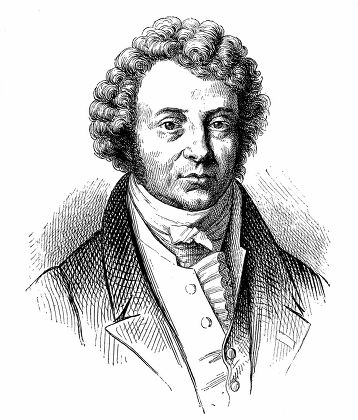
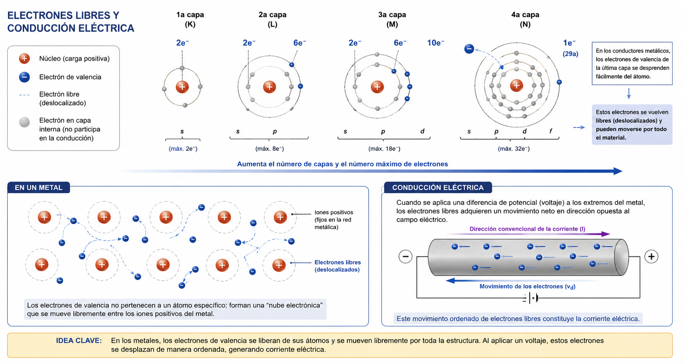
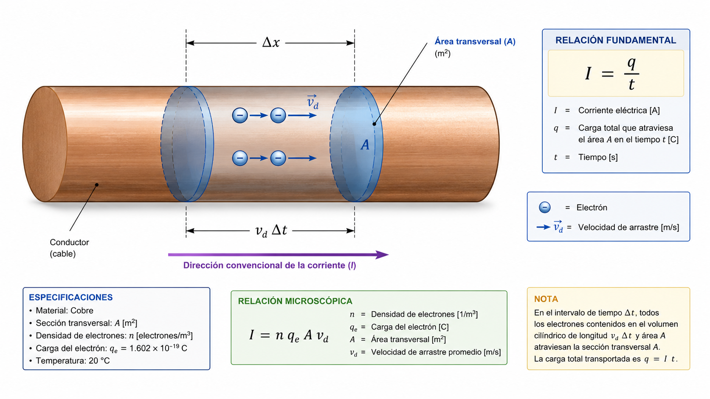
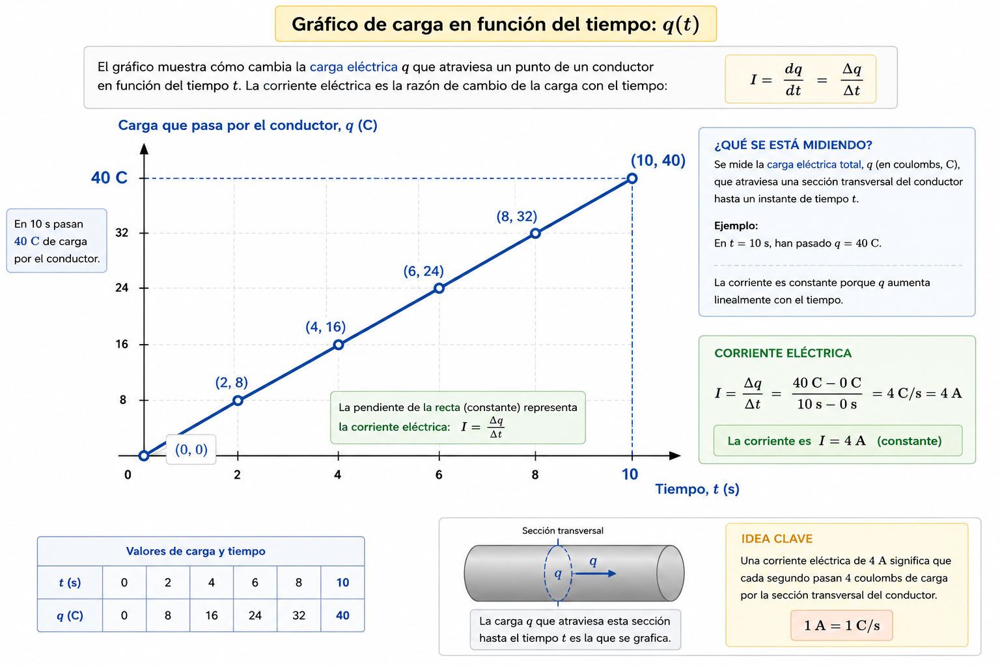

Sistemas Multi Física - Profesor Javier Pereyra
Corriente eléctrica: carga que atraviesa un conductor
Apunte de estudio para comprender la relación entre intensidad de corriente, carga eléctrica y tiempo: \(I=\frac{q}{t}\).

1 Idea inicial
Cuando conectamos una lamparita, un cargador o un motor eléctrico, en el interior de los conductores se produce un movimiento ordenado de cargas. En los metales, esas cargas móviles son principalmente los electrones libres.
La corriente eléctrica no mide cuán rápido se mueve un electrón individual. Mide algo más útil para estudiar circuitos: cuánta carga eléctrica atraviesa una sección del conductor durante cierto intervalo de tiempo.
2 Electrones libres
En un metal, algunos electrones no quedan ligados a un único átomo. Por eso se los llama electrones libres: pueden desplazarse por la estructura metálica cuando existe una diferencia de potencial que los impulsa.
Para entender por qué ocurre esto, conviene mirar los electrones de valencia. Son los electrones ubicados en la capa más externa del átomo. Al estar más lejos del núcleo positivo, sienten una atracción eléctrica menor que los electrones internos.
La ley de Coulomb ayuda a interpretar esta idea: la fuerza eléctrica entre dos cargas depende del producto de sus cargas y disminuye cuando aumenta la distancia entre ellas. De manera simplificada:
El núcleo positivo atrae a los electrones negativos.
Los electrones internos están más cerca del núcleo y quedan más fuertemente ligados.
Los electrones de valencia están más alejados y, en los metales, pueden compartirse entre muchos átomos.
En un metal, los átomos forman una red de iones positivos y los electrones de valencia quedan deslocalizados: no pertenecen a un átomo específico, sino que se mueven por el material como una nube electrónica. Por eso los metales conducen bien la electricidad.

Una analogía posible es imaginar una multitud atravesando una puerta. Para saber si la puerta está muy transitada no alcanza con mirar a una sola persona: nos interesa cuántas personas pasan en determinado tiempo. En electricidad, esas "personas" son cargas eléctricas.
3 Modelo del conductor como cilindro
Para estudiar la corriente, imaginamos el cable como un cilindro y hacemos un corte transversal. Esa superficie funciona como una puerta imaginaria. Durante un intervalo de tiempo, cierta cantidad de carga cruza esa sección.

Lectura del modelo: elegimos una sección del cable, medimos cuánta carga q la atraviesa, registramos el intervalo de tiempo t y calculamos la corriente I.
4 Fórmula fundamental
I: intensidad de corriente eléctrica.
q: carga eléctrica que atraviesa la sección.
t: intervalo de tiempo considerado.
La fórmula se lee como una razón: carga por unidad de tiempo.
5 Sistema de unidades
| Magnitud | Simbolo | Unidad del SI | Relación importante |
|---|---|---|---|
| Corriente eléctrica | I | ampere (A) | \(1\,\mathrm{A}=1\,\mathrm{C/s}\) |
| Carga eléctrica | q | coulomb (C) | \(1\,\mathrm{C}\approx 6{,}24\times10^{18}\) electrones |
| Tiempo | t | segundo (s) | \(1\,\mathrm{min}=60\,\mathrm{s}\); \(1\,\mathrm{h}=3600\,\mathrm{s}\) |
6 Pasaje de términos
Según el dato que falte, se puede despejar la fórmula:
7 Ejemplo resuelto
Problema: por la sección de un cable pasan 18 C de carga en 6 s. Calcular la corriente.
Datos: \(q=18\,\mathrm{C}\); \(t=6\,\mathrm{s}\); \(I=?\)
Fórmula: \(\displaystyle I=\frac{q}{t}\)
Reemplazo: \(\displaystyle I=\frac{18\,\mathrm{C}}{6\,\mathrm{s}}=3\,\mathrm{C/s}\)
Resultado: \(I=3\,\mathrm{A}\)
8 Actividades
Lectura de un gráfico \(q(t)\)
Un gráfico de carga en función del tiempo muestra cómo cambia la carga eléctrica \(q\), medida en coulomb, a medida que transcurre el tiempo \(t\), medido en segundos. Cada punto del gráfico representa una pareja de datos: un tiempo y la carga total que ya atravesó la sección del conductor hasta ese instante.
Por ejemplo, el punto \((10\,\mathrm{s},40\,\mathrm{C})\) significa que, luego de \(10\,\mathrm{s}\), pasaron \(40\,\mathrm{C}\) de carga por la sección transversal. Si los puntos quedan alineados en una recta, significa que la carga aumenta siempre al mismo ritmo: en tiempos iguales pasan cantidades iguales de carga.

- Por un conductor pasan \(24\,\mathrm{C}\) de carga en \(8\,\mathrm{s}\). Calcula la intensidad de corriente.
- Una corriente de \(5\,\mathrm{A}\) circula durante \(12\,\mathrm{s}\). ¿Qué carga total atravesó la sección del cable?
- Si pasan \(90\,\mathrm{C}\) por una sección y la corriente es de \(15\,\mathrm{A}\), ¿cuánto tiempo duró el paso de carga?
- En un circuito, \(2\,\mathrm{C}\) atraviesan una lamparita cada \(0{,}5\,\mathrm{s}\). Calcula la corriente.
- Una batería entrega una corriente de \(0{,}2\,\mathrm{A}\) durante \(3\,\mathrm{min}\). ¿Cuánta carga circuló? Primero pasa minutos a segundos.
- Con los datos de la tabla, construye el gráfico \(q(t)\) y calcula la corriente eléctrica. ¿La corriente es constante? Justifica con la pendiente de la recta.
\(t\,(\mathrm{s})\) 0 3 6 9 12 \(q\,(\mathrm{C})\) 0 6 12 18 24 Orientación: ubica los puntos \((0,0)\), \((3,6)\), \((6,12)\), \((9,18)\) y \((12,24)\). Luego calcula \(I=\frac{\Delta q}{\Delta t}\).
- Completa: si \(I=4\,\mathrm{A}\), entonces en cada segundo pasan ____ \(\mathrm{C}\). ¿Cuánta carga pasa en \(7\,\mathrm{s}\)?
- Por un cable circulan \(300\,\mathrm{C}\) en \(2\,\mathrm{min}\). Calcula la corriente en ampere.
- Un cargador indica \(2\,\mathrm{A}\). Si estuvo funcionando durante \(30\,\mathrm{s}\), ¿cuánta carga entregó?
- En un gráfico \(q(t)\), una recta más inclinada representa mayor corriente. Ordena de menor a mayor corriente las rectas A y B.
\(q\)\(t\)AB
9 Preguntas para pensar
Si dos cables transportan la misma carga, pero uno lo hace en menos tiempo, ¿en cuál hay mayor corriente? Justifica usando la fórmula.
¿Por qué no es correcto decir que corriente eléctrica y carga eléctrica son lo mismo?
10 Respuestas para el docente
- 3 A.
- 60 C.
- 6 s.
- 4 A.
- 36 C, porque 3 min = 180 s.
- 2 A. La pendiente es \(\Delta q/\Delta t = 24\,\mathrm{C}/12\,\mathrm{s}=2\,\mathrm{A}\).
- 4 C cada segundo; en 7 s pasan 28 C.
- 2,5 A, porque 2 min = 120 s.
- 60 C.
- B, A. La recta A tiene mayor pendiente, por lo tanto mayor corriente.